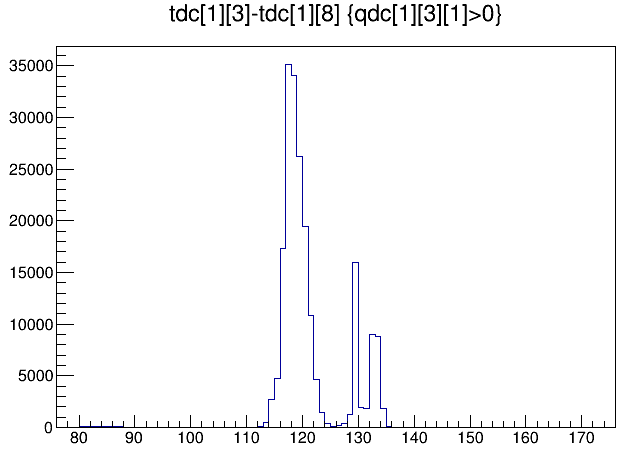
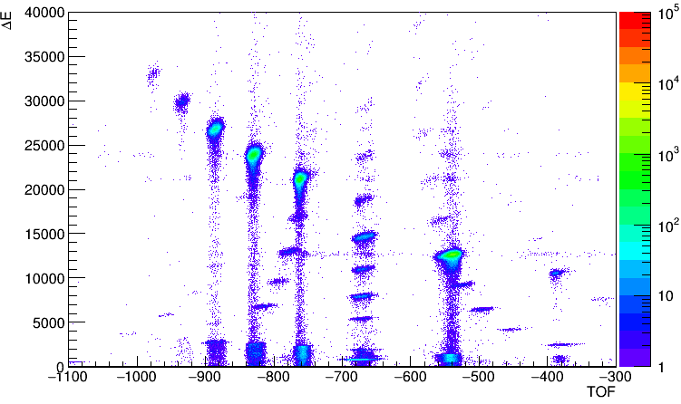

100M 模块测量飞行时间¶
飞行时间的测量是核物理实验中的基本需求，在数字化获取系统中，100M模块的本征分辨约为 100-200 ps，250M 模块本征分辨约为 40ps，500M 模块本真分辨约为 20ps。当采样率不足以直接测量飞行时间时，需要先将 TOF 信息转为 TAC 信号，通过 TAC 的幅度来表示时间。下面将展示如何通过 100M 模块来实现高精度的飞行时间测量。
TAC 信号特点¶
TOF 信号经过 TAC 转为下图所示宽度 2us 的方波，其高度表示时间
XIA slow filter 计算能量适用于单指数下降波形，该 TAC 信号无法通过梯形算法给出准确的高度值
- 因此这里采用 QDC 方法，trigger 前 2us 为 QDC 积分起点，每 500 ns 为一个积分时间窗，共 8 个积分时间窗
pre-trigger 2 us, all QDCs gate width 0.5 us
- 采用蓝色箭头所示两个积分窗的积分数值差作为飞行时间
TOF = QDC[6]-QDC[1] (QDC[0],QDC[1],…,QDC[7])
以上参数为我们测量的一组参数，该参数能够得到与 CAEN V1290 相当的时间分辨。该组参数避开了波形的上升段以及采样点150附近的反射峰

实验测量结果(2017 RIBLL)¶
下图为 TAC 信号与硅探测器的时间差（10 ns/channel），我们可以发现 TAC 信号输出存在一个延迟，而这个延迟与我们选择的 TAC 量程有关，在事件重构时需要注意该时间差
下图为实验测量的 TOF-DeltaE 谱，飞行时间来源于两个薄塑料闪烁体探测器，DeltaE 来于硅探测器。
